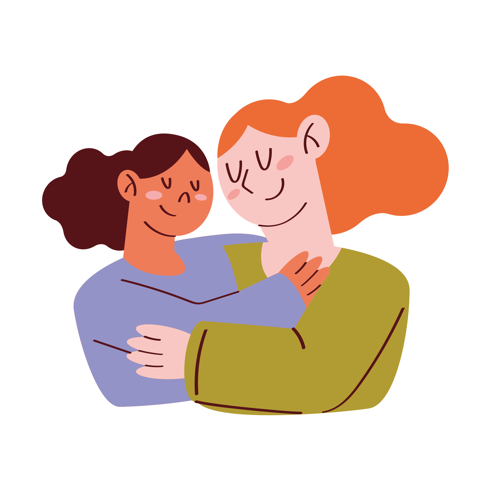
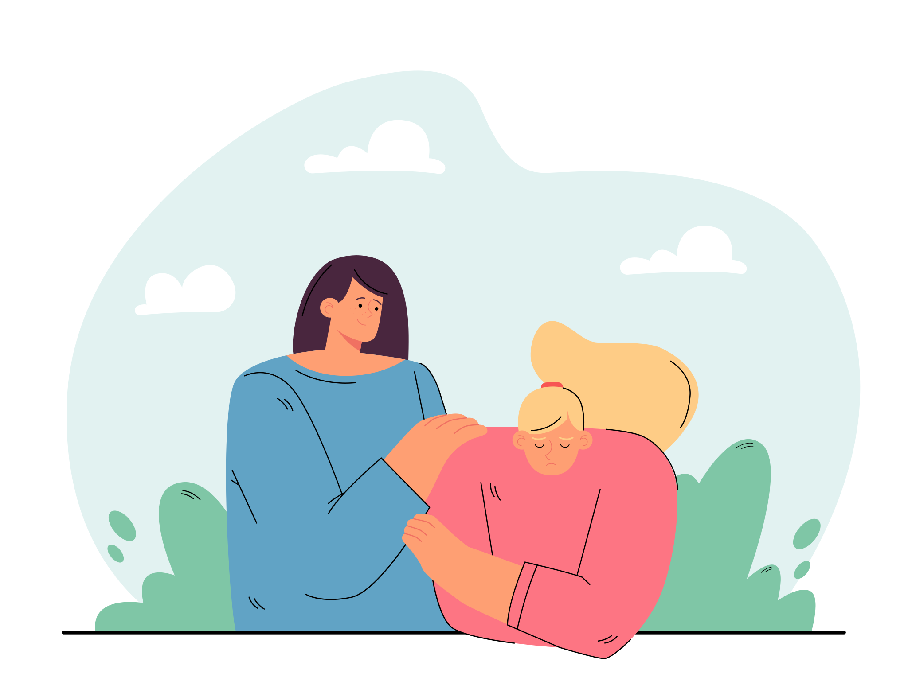
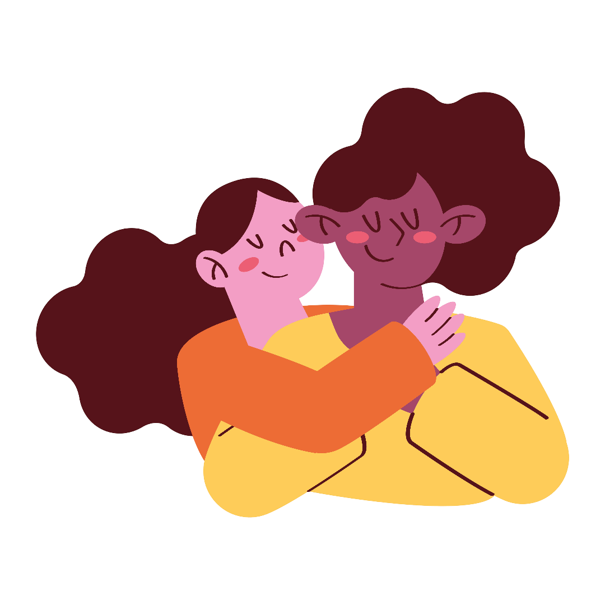
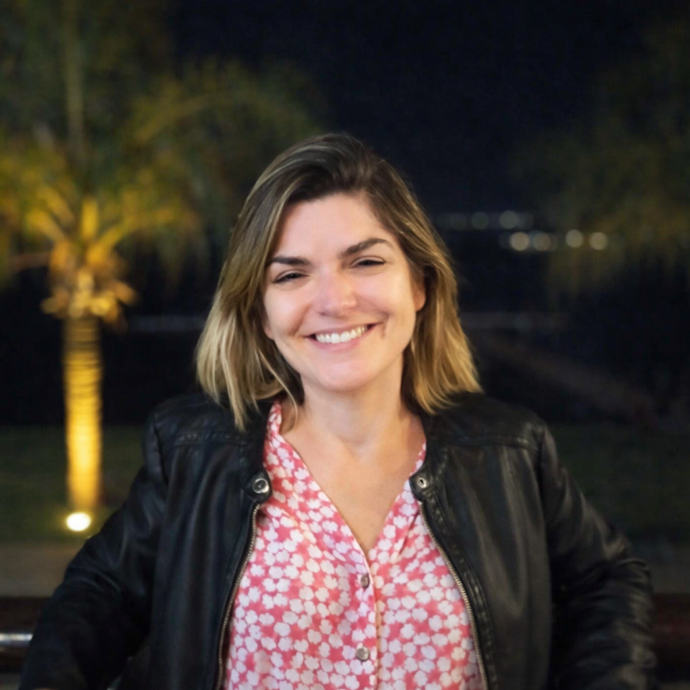

50 mulheres atendidas
Uma rede pensada para acolher mulheres atípicas com cuidado, presença e compromisso contínuo.
O Projeto Eshet Chayil (Empreendendo e Fortalecendo Mulheres Átipicas) é um empreendimento social criado para acolher, fortalecer e valorizar mulheres atípicas por meio de encontros, escuta, apoio emocional, oficinas e construção de uma rede de apoio humana e transformadora.

Um projeto social feito para acolher, fortalecer e abrir caminhos para mulheres atípicas.
Uma rede pensada para acolher mulheres atípicas com cuidado, presença e compromisso contínuo.
Reuniões de acolhimento com escuta, apoio emocional, convivência e fortalecimento coletivo.
Parcerias, oficinas e participação comunitária para gerar pertencimento, autonomia e dignidade.
O Projeto Eshet Chayil nasce com a missão de acolher mulheres atípicas que enfrentam sobrecarga, invisibilidade, desafios emocionais e falta de apoio em sua rotina. Mais do que informar, o projeto busca caminhar junto, criando um ambiente seguro, humano e inspirador.
A proposta une escuta acolhedora, saúde mental, inclusão social, oficinas práticas e incentivo à autonomia, fortalecendo mulheres que cuidam, lutam e precisam também ser cuidadas.

Cada ação do projeto foi pensada para apoiar mulheres atípicas em diferentes dimensões da vida: emocional, social, familiar e econômica.
Encontros mensais com espaço seguro para partilha, apoio mútuo e reconhecimento da vivência de cada mulher.
Apoio emocional e incentivo ao cuidado com a saúde mental como parte essencial do fortalecimento feminino.
Capacitações em atividades que podem ser realizadas em casa, como manicure e outras possibilidades de renda.
Coffee break, convivência e ambiente acolhedor para tornar cada encontro mais humano, leve e respeitoso.
Conexões com parceiras, profissionais e apoiadores para ampliar o impacto social e fortalecer vínculos.
O projeto incentiva autoestima, protagonismo e novas possibilidades para que cada mulher siga mais fortalecida.

O Projeto Eshet Chayil foi estruturado para atender inicialmente 50 mulheres atípicas, com encontros mensais de acolhimento, apoio à saúde mental, oficinas de capacitação e fortalecimento da rede de apoio.
O objetivo é reduzir o isolamento, fortalecer emocionalmente as participantes e criar oportunidades concretas de desenvolvimento pessoal e social. Com pouco, é possível transformar muito.
O projeto também se fortalece por meio da rede Anjo Eshet Chayil, uma proposta de apoio solidário em que cada parceira, apoiador ou empresa ajuda a viabilizar a participação de uma mulher no projeto.
Um anjo apoiador contribui para manter acolhimento, oficinas, apoio emocional e estrutura dos encontros.
Quero apoiar o projetoSeu apoio ajuda diretamente mulheres atípicas que precisam de escuta, fortalecimento e oportunidades reais.
Entender melhorEmpresas, profissionais e instituições podem apoiar com recursos, serviços, oficinas, espaço ou divulgação.
Quero ser parceiroUma causa social com propósito, acolhimento e compromisso real com mulheres atípicas.

Diretora do Projeto Eshet Chayil
Nayra Costa Segundo Antunes, natural de Baturité/CE, é publicitária, corretora de seguros e diretora do Projeto Eshet Chayil.
Com olhar sensível para as realidades sociais e forte compromisso com a transformação de vidas, Nayra conduz uma proposta voltada ao acolhimento, fortalecimento, inclusão e valorização de mulheres atípicas.
Sua atuação prioriza cuidado, dignidade, autonomia e criação de oportunidades concretas, fortalecendo uma rede construída com propósito, presença e responsabilidade social.
Projeto idealizado por Luciano Correa Antunes Segundo.
Uma área criada para orientar de forma clara, acolhedora e objetiva.
O projeto é voltado a mulheres atípicas e mulheres que vivenciam realidades de cuidado, sobrecarga, vulnerabilidade e necessidade de apoio emocional e social.
Sim. O cuidado com a saúde mental faz parte da proposta do projeto, por meio de acolhimento, escuta e apoio emocional.
Os encontros podem incluir acolhimento, rodas de conversa, apoio emocional, oficinas práticas e momentos de convivência com coffee break.
Você pode apoiar como participante, parceira, empresa apoiadora, profissional voluntário ou como um Anjo Eshet Chayil.
Para obter mais informações sobre o Projeto Eshet Chayil, tirar dúvidas ou conhecer melhor as ações desenvolvidas, entre em contato com Nayra Costa Segundo Antunes pelo telefone (61) 99583-5260.
Conheça quem caminha conosco no fortalecimento, acolhimento e valorização de mulheres atípicas.
Seja para participar das ações, apoiar uma mulher, firmar parceria institucional ou conhecer melhor a proposta, este é o primeiro passo para se conectar ao Projeto Eshet Chayil.